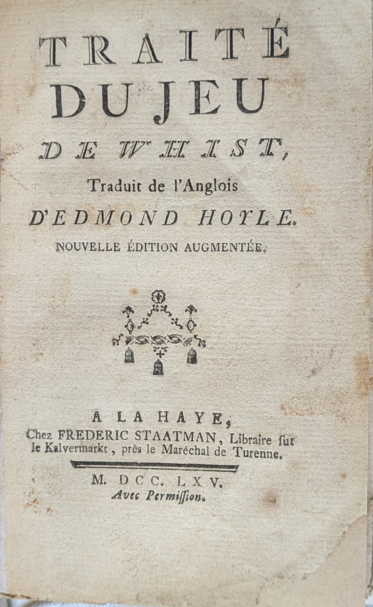

A Descriptive Bibliography of Edmond Hoyle
Copyright © 2014-26 by David Levy
(page updated 2026-03-21)User Guide
Staatman.Whist.Fr.1765
Traité du Jeu de Whist, Chez Frederic Staatman, nouvelle édition augmentée, 1765.
 |
Title: | TRAITÉ | DU JEU | DE WHIST, | Traduit de l'Anglois | D'EDMOND HOYLE. | NOUVELLE ÉDITION AUGMENTÉE. | [tailpiece] | A LA HAYE, | Chez FREDERIC STAATMAN, Libraire ſur | le Kalvermarkt, près le Maréchal de Turenne. | [short oxford rule] | M. D C C. L X V. | Avec Permiſſion. |
| Collation: | 8o: A–G8 H1 [$1–4 (−G4) signed]; 57 leaves, pp. [1–2] 3–112 [2 ] |
| Contents: | Signature (Page) Reference | Contents | Signature (Page) Reference | Running Titles |
| A1r (1) | title | |||
| A1v (2) | blank | |||
| A2r–A2v (3–4) | ‘[headpiece] | Ceux qui n'ont aucune idée du Whiſt [...]’ | |||
| A3r–A4v (5–8) | ‘[row of type orn] | EXPLICATION | De quelque termes [...]’ | A2v–G8r (4–111) | ‘TRAITÉ DU JEU | DE WHIST.’ | |
| A5r–G7v (9–110) | ‘[headpiece] | TRAITÉ | DU JEU | DE WHIST. | [...]’ | |||
| G8r–G8v (111–112) | ‘[oxford rule] | EXTRAIT | DE L'AVANT-COUREUR | FEUILLE HEBDOMADAIRE DE PARIS, | En date du 29 Juillet 1765, [...]’ | G8v (112) | ‘TRAITÉ DU JEU, &c.’ | |
| H1r–H1v | ‘[oxford rule] | TABLE | Des principaux Articles du Traité | Du Jeu de Whist. | [...]’ |
| Publisher: | Chez Frederic Staatman |
| References: | Depaulis 99* |
| Copies Seen: | NvLN [GV1277.H6914 1765]; Levy [2150] |
| Other Copies: | DE-24 [Sport.oct.76]; HAG [KW 2202 A 119] (Google); TNMS [Inv. nr. 418]; CtY-BR [2005 933] |